Chapter 1
Introduction
Nek5000 is designed to simulate laminar, transitional, and turbulent incompressible or low Mach-number
flows with heat transfer and species transport. It is also suitable for incompressible magnetohydrodynamics
(MHD). Nek5000 is written in f77 and C. It uses MPI for message passing (but can be compiled without
MPI for serial applications) and some LAPACK routines for eigenvalue computations (depending on the
particular solver employed). In addition, it can be optionally coupled with MOAB, which
provides an interface to meshes generated with CUBIT. Nek5000 output formats can be read
by either postx or the parallel visualization package VisIt developed by Hank Childs and
colleagues at LLNL/LBNL. VisIt is mandatory for large problems (e.g., more than 100,000 spectral
elements).
Computational approach
The spatial discretization is based on the spectral element method (SEM) [1], which is a high-order
weighted residual technique similar to the finite element method. In the SEM, the solution and data are
represented in terms of th-order tensor-product polynomials within each of  deformable hexahedral
(brick) elements. Typical discretizations involve =100–10,000 elements of order
deformable hexahedral
(brick) elements. Typical discretizations involve =100–10,000 elements of order  =8–16
(corresponding to 512–4096 points per element). Vectorization and cache efficiency derive from the local
lexicographical ordering within each macro-element and from the fact that the action of discrete
operators, which nominally have nonzeros, can be evaluated in only
work and storage through the use of tensor-product-sum factorization [2]. The
SEM exhibits very little numerical dispersion and dissipation, which can be important, for
example, in stability calculations, for long time integrations, and for high Reynolds number
flows. We refer to [3] for more details. The code Nek5000 is based on the following design
principles
=8–16
(corresponding to 512–4096 points per element). Vectorization and cache efficiency derive from the local
lexicographical ordering within each macro-element and from the fact that the action of discrete
operators, which nominally have nonzeros, can be evaluated in only
work and storage through the use of tensor-product-sum factorization [2]. The
SEM exhibits very little numerical dispersion and dissipation, which can be important, for
example, in stability calculations, for long time integrations, and for high Reynolds number
flows. We refer to [3] for more details. The code Nek5000 is based on the following design
principles
- accessible both to beginners and experts alike
- accessible interface via Fortran to include user-defined modules
- the code intrinsics can be accessed and modified via the user files for more experienced
developers
- portability
- minimal use of external libraries to assure fast compile times
- fast matrix free operator evaluation with minimal storage
- matrix operations are implemented in assembler code routines to speed up
computations
- the parallelism is "under the hood" demanding from the user only care in handling local versus
global operations and array sizes
- by testing at the beginning of each run which one of the 3 readily implemented parallel
algorithms behaves optimally it can be stated that the parallelism of Nek5000 is automatically
tuned to each machine
- direct access to parameters at runtime
- geometry and boundary conditions exposed to the user via the .rea file
- handling complex geometries that can be imported from external codes
Nek5000 solves the unsteady incompressible two-dimensional, axisymmetric, or three-dimensional Stokes or
Navier-Stokes equations with forced or natural convection heat transfer in both stationary (fixed) or
time-dependent geometry. It also solves the compressible Navier-Stokes in the Low Mach regime, the
magnetohydrodynamic equation (MHD). The solution variables are the fluid velocity 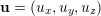,
the pressure , the temperature . All of the above field variables are functions of space
and time in domains and/or defined in Fig. 1.1. Additionally Nek5000 can handle conjugate
heat transfer problems.
1.1 Incompressible Navier–Stokes equations
The governing equations of flow motion in dimensional form are
where .
If the fluid viscosity is constant in the entire domain the viscous stress tensor can be contracted
, therefore one may solve the Navier–Stokes equations in either the stress formulation, or no
stress
- Variable viscosity requires the full stress tensor , and we shall refer
to this as the stress formulation
- Constant viscosity leads to a simpler stress tensor
 , which we refer to as the
’no stress’ formulation
, which we refer to as the
’no stress’ formulation
1.2 Non-dimensional Navier-Stokes
Let us introduce the following non-dimensional variables  , , . For the
pressure scale we have two options
, , . For the
pressure scale we have two options
- convective effects are dominant i.e. high velocity flows
- viscous effects are dominant i.e. creeping flows (Stokes flow) 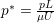
For highly convective flows we choose the first scaling of the pressure and obtain the non-dimensional
Navier-Stokes:
where ![τ∗ = [∇u ∗ + ∇u ∗T]](index33x.png) . The two non-dimensional numbers here are the Reynolds number
and the Froude number, defined as .
. The two non-dimensional numbers here are the Reynolds number
and the Froude number, defined as .
1.3 Energy equation
In addition to the fluid flow, Nek5000 computes automatically the energy equation
1.4 Non-dimensional energy/passive scalar equation
A similar non-dimensionalization as for the flow equations using the non-dimensional variables ,
,  , leads to
, leads to
where , with .
1.5 Passive scalars
We can additionally solve a convection-diffusion equation for each passive scalar , =1,2, in
The terminology and restrictions of the temperature equations are retained for the passive scalars, so
that it is the responsibility of the user to convert the notation of the passive scalar parameters to their
thermal analogues. For example, in the context of mass transfer, the user should recognize that the values
specified for temperature and heat flux will represent concentration and mass flux, respectively. Any
combination of these equation characteristics is permissible with the following restrictions.
First, the equation must be set to unsteady if it is time-dependent or if there is any type of
advection. For these cases, the steady-state (if it exists) is found as stable evolution of the
initial-value-problem. Secondly, the stress formulation must be selected if the geometry is time-dependent.
In addition, stress formulation must be employed if there are traction boundary conditions applied
on any fluid boundary, or if any mixed velocity/traction boundaries, such as symmetry and
outflow/n, are not aligned with either one of the Cartesian or  axes. Other capabilities
of Nek5000 are the linearized Navier-Stokes for flow stability, magnetohydrodynamic flows
etc.
axes. Other capabilities
of Nek5000 are the linearized Navier-Stokes for flow stability, magnetohydrodynamic flows
etc.
1.6 Unsteady Stokes
In the case of flows dominated by viscous effects Nek5000 can solve the reduced Stokes equations
where and Also here we can distinguish between the stress and non-stress formulation according to whether the
viscosity is variable or not. The non-dimensional form of these equations can be obtained using the viscous
scaling of the pressure.
1.7 Steady Stokes
If there is no time-dependence, then Nek5000 can further reduce to
where and
1.8 Linearized Equations
In addition to the basic evolution equations described above, Nek5000 provides support for the evolution of
small perturbations about a base state by solving the linearized equations
for multiple perturbation fields subject to different initial conditions and (typically)
homogeneous boundary conditions. These solutions can be evolved concurrently with the base fields
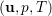. There is also support for computing perturbation solutions to the Boussinesq equations for
natural convection. Calculations such as these can be used to estimate Lyapunov exponents of chaotic
flows, etc.
1.9 Steady conduction
The energy Eq. 1.4 in which the advection term and the transient term  are zero. In
essence this represents a Poisson equation.
are zero. In
essence this represents a Poisson equation.
1.10 Low-Mach Navier-Stokes
The compressible Navier-Stokes differ mathematically from the incompressible ones mainly in the
divergence constraint  . In this case the system of equations is not closed and an additional
equation of state (EOS) is required to connect the state variables, e.g. . However Nek5000
can only solve the Low Mach approximation of the compressible Navier-Stokes. The Low-Mach
approximation decouples the pressure from the velocity leading to a system of equations which can be
solved numerically in a similar fashion as the incompressible Navier-Stokes.
. In this case the system of equations is not closed and an additional
equation of state (EOS) is required to connect the state variables, e.g. . However Nek5000
can only solve the Low Mach approximation of the compressible Navier-Stokes. The Low-Mach
approximation decouples the pressure from the velocity leading to a system of equations which can be
solved numerically in a similar fashion as the incompressible Navier-Stokes.
The Low Mach equations in non-dimensional form are
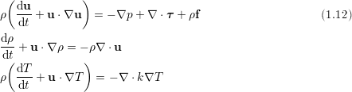
where ![T 2
τ = μ [∇u + ∇u − 3∇ ⋅uI]](index66x.png) .
.
The implementation of the equation if state for the Low Mach formulation is for the moment
hard-coded to be the ideal gas equation of state 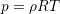. This allows for both variable density and
variable viscosity. The system is solved by substituting into the continuity equation and
obtaining a so-called thermal divergence (the term is given as a function of the temperature). A
more detailed description on how these equations connect is given in section 1.10 as well as in the
developer’s manual.
1.11 Incompressible MHD equations
Magnetohydrodynamics is based on the idea that magnetic fields can induce currents in a moving
conductive fluid, which in turn creates forces on the fluid and changing the magnetic field itself.
The set of equations which describe MHD are a combination of the Navier-Stokes equations
of fluid dynamics and Maxwell’s equations of electromagnetism. These differential equations
have to be solved simultaneously, and Nek5000 has an implementation for the incompressible
MHD.
Consider a fluid of velocity subject to a magnetic field then the incompressible MHD
equations are
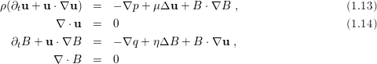
where  is the density the viscosity, resistivity, and pressure .
is the density the viscosity, resistivity, and pressure .
The total magnetic field can be split into two parts: (mean + fluctuations). The above
equations become in terms of Elsässer variables ( )
)
where .
The important non-dimensional parameters for MHD are and the magnetic Re
.
1.12 Adaptive Lagrangian-Eulerian (ALE)
We consider unsteady incompressible flow in a domain with moving boundaries:
Here, 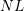 represents the quadratic nonlinearities from the convective term.
Our free-surface hydrodynamic formulation is based upon the arbitrary Lagrangian-Eulerian (ALE)
formulation described in [4]. Here, the domain  is also an unknown. As with the velocity, the
geometry is represented by high-order polynomials. For viscous free-surface flows, the rapid
convergence of the high-order surface approximation to the physically smooth solution minimizes
surface-tension-induced stresses arising from non-physical cusps at the element interfaces, where only
is also an unknown. As with the velocity, the
geometry is represented by high-order polynomials. For viscous free-surface flows, the rapid
convergence of the high-order surface approximation to the physically smooth solution minimizes
surface-tension-induced stresses arising from non-physical cusps at the element interfaces, where only  continuity is enforced. The geometric deformation is specified by a mesh velocity
continuity is enforced. The geometric deformation is specified by a mesh velocity  that is
essentially arbitrary, provided that satisfies the kinematic condition
that is
essentially arbitrary, provided that satisfies the kinematic condition  , where is
the unit normal at the free surface 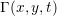. The ALE formulation provides a very accurate
description of the free surface and is appropriate in situations where wave-breaking does not
occur.
, where is
the unit normal at the free surface 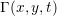. The ALE formulation provides a very accurate
description of the free surface and is appropriate in situations where wave-breaking does not
occur.
To highlight the key aspects of the ALE formulation, we introduce the weighted residual formulation of
(1.16): Find  such that:
such that:
for all test functions . Here are the compatible velocity-pressure
approximation spaces introduced in [5],  denotes the inner-product
denotes the inner-product  , and
is the stress tensor
, and
is the stress tensor  . For simplicity, we have neglected the surface tension term. A
new term in (1.18) is the trilinear form involving the mesh velocity which derives from the Reynolds transport theorem when the time derivative is moved outside the bilinear
form
. For simplicity, we have neglected the surface tension term. A
new term in (1.18) is the trilinear form involving the mesh velocity which derives from the Reynolds transport theorem when the time derivative is moved outside the bilinear
form  . The advantage of (1.18) is that it greatly simplifies the time differencing and avoids
grid-to-grid interpolation as the domain evolves in time. With the time derivative outside of the integral,
each bilinear or trilinear form involves functions at a specific time, , integrated over 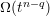. For
example, with a second-order backward-difference/extrapolation scheme, the discrete form of (1.18) is
Here, 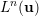 accounts for all linear terms in (1.18), including the pressure and divergence-free constraint,
which are evaluated implicitly (i.e., at time level
. The advantage of (1.18) is that it greatly simplifies the time differencing and avoids
grid-to-grid interpolation as the domain evolves in time. With the time derivative outside of the integral,
each bilinear or trilinear form involves functions at a specific time, , integrated over 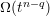. For
example, with a second-order backward-difference/extrapolation scheme, the discrete form of (1.18) is
Here, 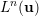 accounts for all linear terms in (1.18), including the pressure and divergence-free constraint,
which are evaluated implicitly (i.e., at time level  , on
, on  ), and
), and  accounts for all
nonlinear terms, including the mesh motion term (1.19), at time-level
accounts for all
nonlinear terms, including the mesh motion term (1.19), at time-level  . The superscript on the
inner-products
. The superscript on the
inner-products  indicates integration over
indicates integration over  . The overall time advancement is as follows.
The mesh position
. The overall time advancement is as follows.
The mesh position  is computed explicitly using
is computed explicitly using  and
and  ; the new mass,
stiffness, and gradient operators involving integrals and derivatives on are computed; the
extrapolated right-hand-side terms are evaluated; and the implicit linear system is solved for
; the new mass,
stiffness, and gradient operators involving integrals and derivatives on are computed; the
extrapolated right-hand-side terms are evaluated; and the implicit linear system is solved for
 . Note that it is only the operators that are updated, not the matrices. Matrices are never
formed in Nek5000 and because of this, the overhead for the moving domain formulation is very
low.
. Note that it is only the operators that are updated, not the matrices. Matrices are never
formed in Nek5000 and because of this, the overhead for the moving domain formulation is very
low.
 .
The shared boundaries are denoted and the solid boundary which is not shared by
fluid is 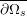, while the fluid boundary not shared by solid .
.
The shared boundaries are denoted and the solid boundary which is not shared by
fluid is 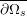, while the fluid boundary not shared by solid .


![--1- [3 (vn, un)n − 4 (vn −1,un−1)n−1 + (vn −2,un−2)n−2] = Ln(u )+ 2^N Ln− 1 − ^N Ln− 2. (1.20)
2 Δt](index105x.png)